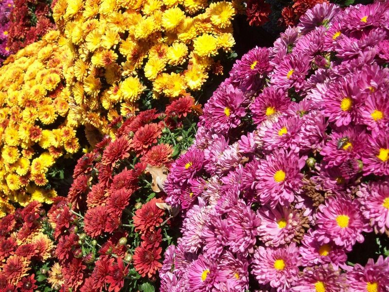
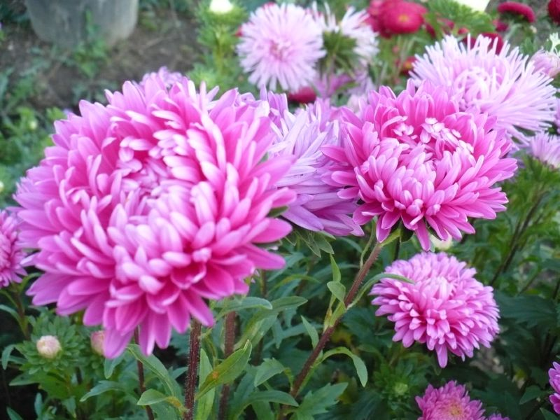
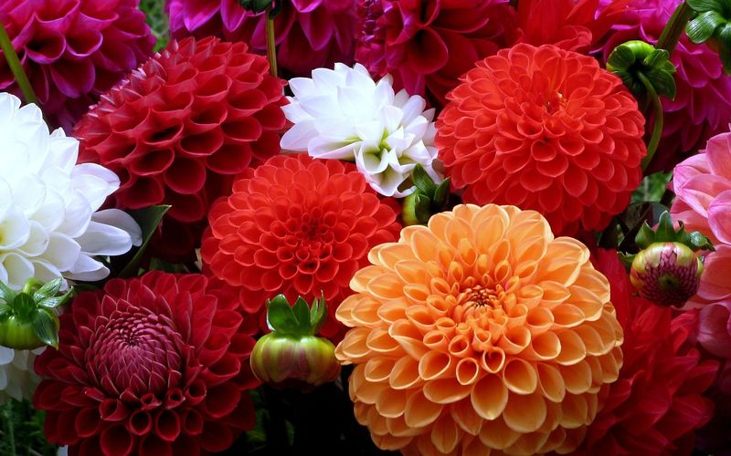
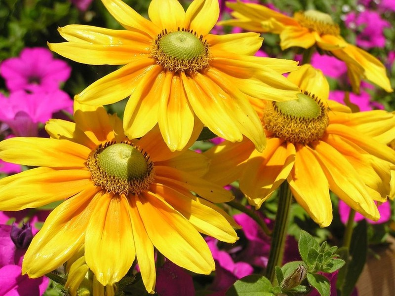
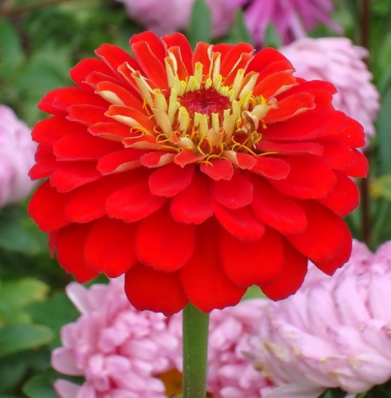
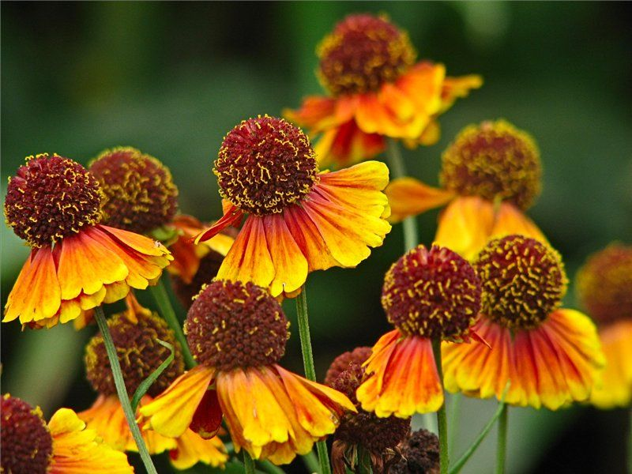
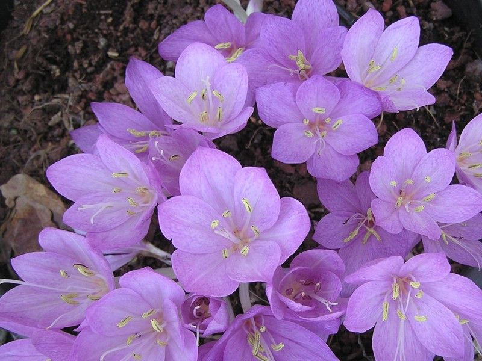
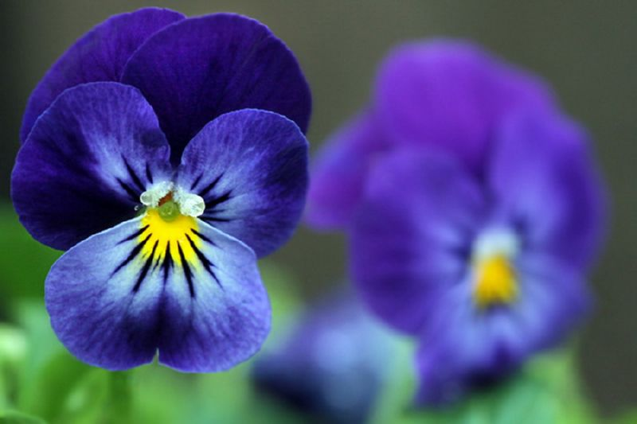
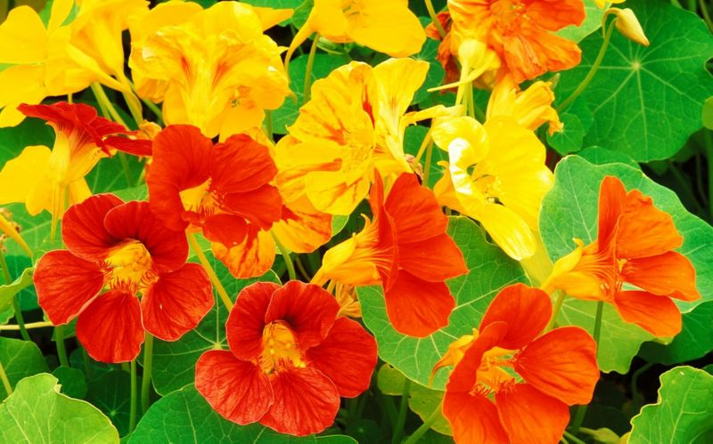

Осень – волшебная пора, когда природа готовится отдохнуть от буйства красок и пышности цветов. Однако даже в этот период в садах расцветают самые разнообразные растения, продолжая нас радовать своим изяществом и красотой.
Их еще называют осеннецветущими или растениями короткого дня, потому что именно в это время года солнце уже не такое жаркое, а светлая часть дня значительно сокращается.
Конечно, количество осенних цветов не так велико и многообразно как летних, но, тем не менее, их достаточно, чтобы украсить ваш осенний сад и наполнить его приятным ароматом, сделав при этом уникальным и неповторимым. В большинстве осенние цветы относятся к многолетним, хотя среди них встречаются и однолетки.
Сентябрьские цветы
По своим погодным условиям сентябрь обычно мало отличается от конца лета и только ближе к концу месяца можно заметить изменения. Поэтому в начале сентября еще продолжают цвести многие летние цветы (бегония, гербера, однолетняя астра и др.), но, к сожалению, они неустойчивы к надвигающимся холодам и недостатку солнечного света. Часто такие растения выращиваются как однолетние, особенно в более холодных регионах.
Однако, как уже отмечалось, существует достаточно большое количество цветов, предпочитающих расцветать именно осенью.
Хризантемы (Дубки)
Именно этим цветам мы предоставим право открыть наш парад осенней красоты. Существует большое многообразие сортов хризантем, отличающихся по высоте (высокие – вырастают до полутора метров, среднерослые и небольшие — от 0,5 м.), размерами цветков и цветовыми тонами (от белых до медно-красных, и фиолетовых, а также всевозможные тона желтого и оранжевого).
Сортовые растения с большими цветками обычно начинают цветение с окончания лета и до конца осени. Они достаточно чувствительны к холодам, тогда как виды с небольшими цветами прекрасно зимуют.
Большой популярностью в последнее время пользуются неприхотливые корейские хризантемы с обилием маленьких цветов, которыми усыпаны кусты, например, Аленушка (соцветия простые ярко-розовые), Альтгольд (цветки помпонные темно-желтые), Белоснежка (белые махровые цветки), Гебе (цветет до заморозков, розово-желтые простые цветки), Лада (махровые розово-сиреневые цветки), Лето (крупные красные полумахровые цветки), Оранжевый закат (крупные махровые оранжево-коричневые цветки). Листья Хризантем также очень.
Астры
Занимают устойчиво высокое положение в рейтинге осеннецветущих, благодаря своему длительному и обильному цветению. Существует множество сортов, зацветающих в первые два месяца осени, за что они получили свое народное название «сентябрины» и «октябрины» (например, новобельгийский и новоанглийский сорта). Подобно хризантемам, существует огромный выбор различных сортов астр на любой вкус как по высоте и размеру куста, так и по цветовой гамме (оттенки белого, голубого, розового и лилового).
Это неприхотливое растение из рода травянистых, которое легко размножается, устойчиво к несильным морозам, а его обильное цветение продолжается до самой зимы, украшая сад яркими звездочками цветов. Часто цветков так много на кусте, что они скрывают под собой листву растения. Существуют как однолетние, так и многолетние виды астр.
Георгины
Отличное украшение дачного участка. Они теневыносливы, произрастают практически на любом виде почвы, любят увлажненние, но не переносят избыток влаги.
Георгины являются теплолюбивыми, поэтому их цветение продолжается обычно до первых холодов.
Рудбекия волосистая
Всем известны эти красивые яркие желтые и оранжевые цветы с темно-коричневой сердцевиной, очень напоминающие большую (5-6 см) ромашку. Растение обладает прямыми упругими высотой 45-65 см шершавыми стеблями и густыми шершавыми удлиненными листьями.
Цветет рудбекия до заморозков, любит удобренную увлажненную землю, теневынослива и не имеет особых требований по уходу. Она прекрасно сочетается с хвойными кустарниками, отлично смотрится на фоне газонов и в рокариях.
Цинния изящная («майоры» или «майорики»)
Это культура также широко известна среди цветоводов. Стебли циннии сильнорослые и стоящие прямо, с жестким пушком. Форма цветков зависит от вида, варьируется от простой до махровой, а их размеры достигают 10 см. Цветки имеют широкую цветовую гамму и характеризуются многочисленностью.
Цинния прекрасно используется для оформления клумб, микробордеров, рабаток и балконов, а также прекрасно смотрится в вазонах.
Октябрьские цветы
Октябрьская погода обычно уже сильно отличается от летней, многие садовые растения отцвели, а любой садовод мечтает продлить летнюю сказку как можно дольше. Тем не менее, этот месяц также не обделен природой-матушкой, которая создала множество октябрьских шедевров.
Среди октябрьских осеннецветущих растений можно выделить красавцы, о которых вы можете прочитать ниже.
Львиный зев («собачки»)
Многолетнее растение чаще используют как однолетник. Его оригинальные небольшие цветы напоминают львиную пасть, благодаря чему он и имеет свое необычное имя. Растение приятно удивляет разнообразием своих цветовых оттенков и переходов от белоснежных до темно-бордовых. «Собачки» могут быть как высокорослыми (до 80 см высотой), так и низкорослыми и даже карликовыми, не превышающими 20 см. Соцветия располагаются на прямом центральном достаточно прочном стебле в виде конуса до 35 см длинной.
Львиный зев прекращает свое цветение с приходом морозов. Львиный зев предпочитает легкую суглинистую землю на просторных хорошо освещаемых солнцем участках, очень неприхотлив, а регулярное удаление отцветших соцветий способствует развитию боковых отростков, обильно усыпанных красочными цветочками.
Львиный зев можно выращивать для оформления бордюров, клумб, рабаток и микробордеров. Самыми популярными сортами считают:
- лимонно-желтый «Лимонад»
- ярко-оранжевый «Вулкан»
- ярко-розовый «Бриллиант Роза»
- огненно-карминовый «Шарлах Триумф»
- черно-пурпурный «Шварц Принц»
- ярко-красный «Дефианс»
- белоснежный «Шнеефлекс»
- темно-пурпурно-красный бархатный «Дункель Гранат»
Гелениум осенний
Гелениум — это настоящее многолетнее чудо природы, рассыпающееся над своим кустом шапкой восхитительных солнечно-жёлтых, кирпично-багровых или красных-оранжево небольших (3-4 см величиной) цветков. Он абсолютно неприхотлив и принадлежит к высокорастущим видам (от 0,7 до 1,5 м).
Для него наиболее привлекательна сырая удобренная земля. Львиный зев отлично смотрится на берегах водоемов, в виде живых изгородей, заднего и среднего плана клумб. Хорошо гармонируют с астрами, дельфиниумом, вербеной и монардой. Наиболее востребованными среди садоводов являются махровые сорта.
Колхикум («безвременник»)
Это загадочное растение является клубнево-луковичным многолетником и приобрело свое название благодаря запоздалому осеннему цветению в отличие от своих собратьев. Это настоящий весенний всплеск красоты и нежности среди увядающих красок осени. В высоту он не превышает 20см. Очень неприхотлив. Поляны колхикума на осеннем пейзаже завораживают своей изысканностью и утонченностью.
Насчитывается порядка 70 различных сортов этого удивительного цветка. Предпочитает рыхлую легкую почву и солнечные южные участки. Прекрасно смотрится в альпинариях. Несмотря на свою привлекательность, растение является ядовитым и требует осторожного с ним обращения.
Анютины глазки (виола или фиалка Витрокка)
Замечательная низкорослая (15-30 см) многолетняя морозоустойчивая садовая культура, по форме своих цветов напоминающая фиалку. Виола относится к тенеустойчивым растениям, но в затененных участках ее цветение менее обильное. Цветовая гамма анютиных глазок широка и разнообразна.
Анютины глазки не терпят переизбыток влаги и предпочитают суглинистый грунт. Эти цветы прекрасно украшают балконы, бордюры, уличные вазоны, разнообразные посадки и могут быть высажены вокруг деревьев.
Настурция
Настурция – это очень популярное садовый вид, произрастающий на делянках с умеренным содержанием питательных веществ. На плодородном грунте она развивает свою зеленую массу и уменьшает количество цвета, а на бедных – теряет свою декоративность. Почти все виды настурции являются однолетками.
Сегодня вниманию садоводов предлагается около 90 сортов настурции на любой вкус. В холодных регионах наибольшей популярностью пользуется Настурция многолистная, способная пережить температуру до -20 градусов.
